The aim of the funbiogeo package is to help users
streamline the workflows in functional
biogeography (Violle et al.
2014). It helps filter sites, species, and traits based on their
trait coverages. It also provides default diagnostic plots and standard
tables summarizing input data. This vignette aims to be an introduction
to the most commonly used functions.
This vignette is a worked through real world example of a functional
biogeography workflow using the internal dataset provided in
funbiogeo and derived from the WOODIV database (Monnet et al. 2021).
library("funbiogeo")
library("ggplot2")
library("sf")
#> Linking to GEOS 3.12.1, GDAL 3.8.4, PROJ 9.4.0; sf_use_s2() is TRUETypes of data
The functions in funbiogeo mostly leverage three
different objects:
- the species x traits
data.frame, which describes the traits (in columns) of the species (in rows) (species_traitsargument infunbiogeofunctions); - the site x species
data.frame, which describes the presence/absence, the abundance, or the cover of species (in columns) across sites (in rows) (site_speciesargument infunbiogeofunctions); - the site x locations object, which describes the
physical location of sites through an
sfobject (site_locationsargument infunbiogeofunctions).
Note: the site_locations object must be an
sf object, as it is now the standard package for spatial
data in R. To have more information about the sf package, refer to its
website.
If you want to learn how to convert your data to an sf
object, check the formatting
vignette.
Optionally, an additional dataset can be provided:
- the species x categories object, which contains a
potential categorization of species like taxonomic classes, specific
diets, or any arbitrary classification (
species_categoriesargument infunbiogeofunctions)
Provided dataset
We are interested in mapping the functional traits of 24 Conifer tree species of Western European Mediterranean regions.
You can load the example data using the
data(..., package = "funbiogeo") call:
data("woodiv_site_species", package = "funbiogeo")
data("woodiv_categories", package = "funbiogeo")
data("woodiv_locations", package = "funbiogeo")
data("woodiv_traits", package = "funbiogeo")In the following sections, we’ll describe in detail these provided objects in the package.
Species x Traits
This object contains traits values for multiple traits (as columns)
for studied species (as rows). It should be a data.frame.
The column containing species names should be named
“species” and the other columns should only contain
trait values.
Note that we’ll be talking about species throughout
this vignette and in the arguments of funbiogeo, but the
package doesn’t make any assumption on the biological level. It can be
individuals, populations, strains, species, genera, families, etc. The
important fact is that you should have trait data for the level at which
you want to work. This biological level should correspond between the
trait data (species_traits argument) and the
occurrence/abundance (site_species argument) you have.
Let’s examine the woodiv_traits data included in the
package:
| species | plant_height | seed_mass | sla | wood_density | |
|---|---|---|---|---|---|
| 1 | AALB | 49.64162 | 67.86692 | 7.483978 | 0.4490821 |
| 3 | ACEP | 25.87500 | 64.70375 | NA | NA |
| 4 | ANEB | 15.00000 | NA | 3.420603 | NA |
| 5 | APIN | 27.33333 | 55.52000 | 3.420603 | 0.4586508 |
The first column "species" contains
species names, while the next four columns contain different traits for
all species.
Let’s look at a summary of the trait dataset:
summary(woodiv_traits)
#> species plant_height seed_mass sla
#> Length:24 Min. : 1.368 Min. : 7.608 Min. : 0.508
#> Class :character 1st Qu.: 8.776 1st Qu.: 14.926 1st Qu.: 3.421
#> Mode :character Median :16.908 Median : 30.188 Median : 4.365
#> Mean :18.779 Mean : 62.245 Mean : 4.773
#> 3rd Qu.:25.531 3rd Qu.: 57.558 3rd Qu.: 5.824
#> Max. :49.642 Max. :626.189 Max. :10.600
#> NA's :1 NA's :7
#> wood_density
#> Min. :0.2796
#> 1st Qu.:0.4500
#> Median :0.4642
#> Mean :0.4948
#> 3rd Qu.:0.5300
#> Max. :0.6488
#> NA's :7Note that to use your own species by traits data.frame,
it should follow a similar structure with the first column being named
"species" and the other ones containing
traits.
Site x Species
This object contains species occurrences/abundance/coverage at
sites
of the study area. It is a data.frame. The first column,
"site", contains site names, while the
other columns contain the distribution of each species across sites.
As mentioned above for the notion of “species” we’re referring to, we
are talking about sites in an abstract way. funbiogeo
doesn’t have a specific notion of sites, but these can be any groupings
of individuals whatever the scale. These could, for example, be plots,
assemblages, countries, or biomes.
The package funbiogeo comes with the example dataset on
Conifer tree species of Western European Mediterranean regions
woodiv_site_species. Let’s look at it:
| site | AALB | ACEP | APIN | CLIB | CSEM |
|---|---|---|---|---|---|
| 41152325 | 1 | 0 | 0 | 0 | 0 |
| 40852325 | 1 | 0 | 0 | 0 | 0 |
| 40852345 | 1 | 0 | 0 | 0 | 0 |
| 42552105 | 1 | 0 | 0 | 0 | 0 |
| 41152315 | 1 | 0 | 0 | 0 | 0 |
| 37452365 | 1 | 0 | 0 | 0 | 0 |
| 36952225 | 1 | 0 | 0 | 0 | 0 |
| 37152185 | 1 | 0 | 0 | 0 | 0 |
| 39852335 | 1 | 0 | 0 | 0 | 0 |
| 39652375 | 1 | 0 | 0 | 0 | 0 |
The example dataset contains the occurrence of the 24 Conifer tree species across 5,366 sites (grid cells of 10 km x 10 km resolution).
To use your own site by species data.frame, you should
follow a similar structure with the first column being named
"site" and the other ones containing
presence information of species across sites.
Site x Locations
This object contains the geographical location of the sites. It
should be an sf object from the sf
package. These are spatial R objects that describe geographical
locations. The sites can have arbitrary shapes: points, regular
polygons, irregular polygons, or even line transects! To make sure that
your data is well plotted you should specify the Coordinate Reference
System (CRS) of this object.
The package funbiogeo comes with the example dataset
woodiv_locations defining the location of the 5,366 sites
(grid cells of 10 km x 10 km resolution) as polygons. It contains the
label of the sites in its first column
"site":
head(woodiv_locations)
#> Simple feature collection with 6 features and 2 fields
#> Geometry type: POLYGON
#> Dimension: XY
#> Bounding box: xmin: 2630000 ymin: 1750000 xmax: 2650000 ymax: 1970000
#> Projected CRS: ETRS89-extended / LAEA Europe
#> site country geometry
#> 1 26351755 Portugal POLYGON ((2630000 1750000, ...
#> 2 26351765 Portugal POLYGON ((2630000 1760000, ...
#> 4 26351955 Portugal POLYGON ((2630000 1950000, ...
#> 5 26351965 Portugal POLYGON ((2630000 1960000, ...
#> 6 26451755 Portugal POLYGON ((2640000 1750000, ...
#> 7 26451765 Portugal POLYGON ((2640000 1760000, ...Note that to use your own site locations object, it should follow a
similar structure, being an sf object with the first column
being named "site".
Species x Categories
This optional object contains a categorization of species like
taxonomic classes, specific diets, or any arbitrary classification
(species_categories argument in some funbiogeo
functions). It must contain only two columns: the
species column and the category of
species.
The package funbiogeo comes with the example dataset
woodiv_categories providing different species
categorizations: the species family, the species genus, the species
endemism, and the cultivated status of the species.
Let’s have a look at this dataset:
| species | family | genus | binomial | endemism | cultivated |
|---|---|---|---|---|---|
| AALB | Pinaceae | Abies | Abies alba | 0 | 0 |
| ACEP | Pinaceae | Abies | Abies cephalonica | 1 | 0 |
| ANEB | Pinaceae | Abies | Abies nebrodensis | 1 | 0 |
| APIN | Pinaceae | Abies | Abies pinsapo | 1 | 0 |
| CLIB | Pinaceae | Cedrus | Cedrus libani | 0 | 1 |
Let’s select the family category:
#> species family
#> 1 AALB Pinaceae
#> 3 ACEP Pinaceae
#> 4 ANEB Pinaceae
#> 5 APIN Pinaceae
#> 6 CLIB Pinaceae
#> 7 CSEM CupressaceaeVisualizing the data (diagnostic plots)
funbiogeo provides many functions to display the data to
help the user select specific traits, species, and/or sites. We are
going to detail some of them in this section (see the full list and how
to interpret them in the diagnostic plot
vignette). We call them diagnostic plots because they help
us to have an overview of our dataset prior to the
analyses.
Trait completeness per species
A first way to visualize our data.frame is to look at
the proportion of species with non-missing traits using the
fb_plot_number_species_by_trait() function. It takes the
species by trait data.frame as input.
fb_plot_number_species_by_trait(woodiv_traits)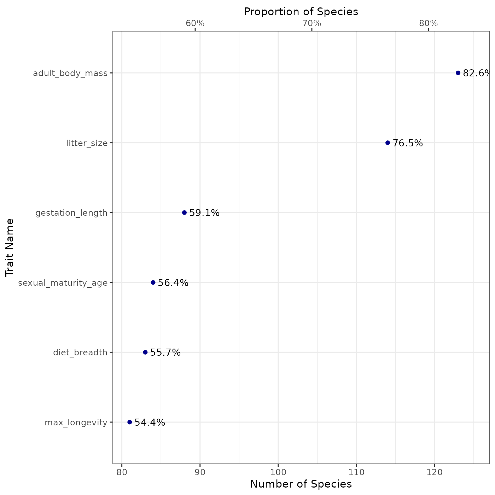
This plot shows us the number of species (along the x-axis) in function of the trait name (along the y-axis). The number of concerned species is shown at the bottom of the plot while the corresponding proportion of species (compared to all the species included in the trait dataset) is indicated as a secondary x-axis at the top. The proportion of species concerned is shown at the right of each point. For example, in our example dataset, 70.8% species have a value for SLA.
The function also includes a way to provide a target proportion of species as the second argument. It will display the proportion as a dark red dashed line.
For example, if we want to visualize which traits are available for
more than 75% of the species (we can also say which traits
cover more than 75% of the species), we can use function
fb_plot_number_species_by_trait(). It takes as first
argument, the species by traits table, then, as second argument the
proportion of species to consider (as a number between 0 and 1):
fb_plot_number_species_by_trait(
woodiv_traits, threshold_species_proportion = 0.75
)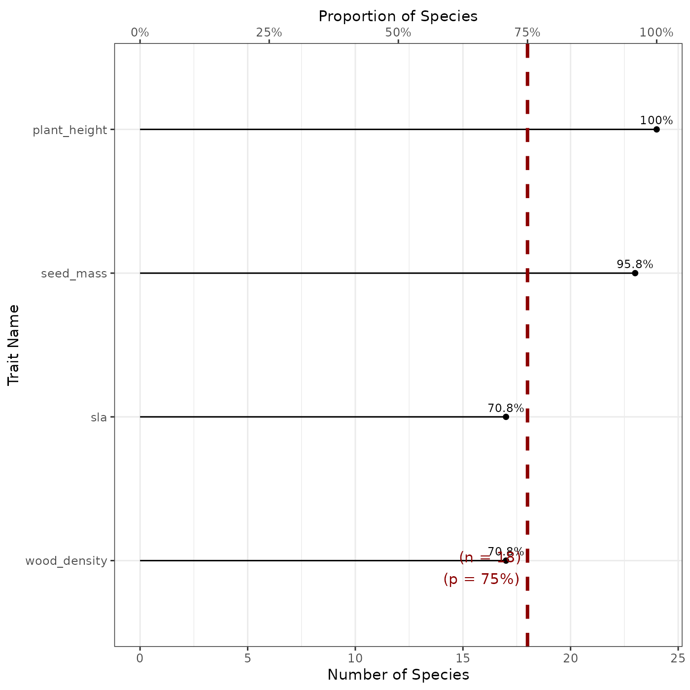
The plot shows us the number (and proportion) of species which have non-missing values for each trait included in our dataset. The number of species is specified as the bottom x-axis, while its corresponding proportion is reported as the top x-axis. According to this graph, we see that plant height is available for 100% of species, while SLA is only available for 70.8% of the species in the dataset. The dashed red line represents the proportion we gave as threshold in the function call above. By the line we see this proportion (75%) with the corresponding species number (18) as labels on the plot. Given this plot, we know that only two traits are available for more than 75% of the species: plant height and seed mass.
Number of Traits per Species
Another way to filter the data would be to select certain species
that have at least a certain number of traits. This can be visualized
using the fb_plot_number_traits_by_species() function.
Similarly to the above-mentioned function, it takes the species x traits
data.frame as the first argument:
fb_plot_number_traits_by_species(woodiv_traits)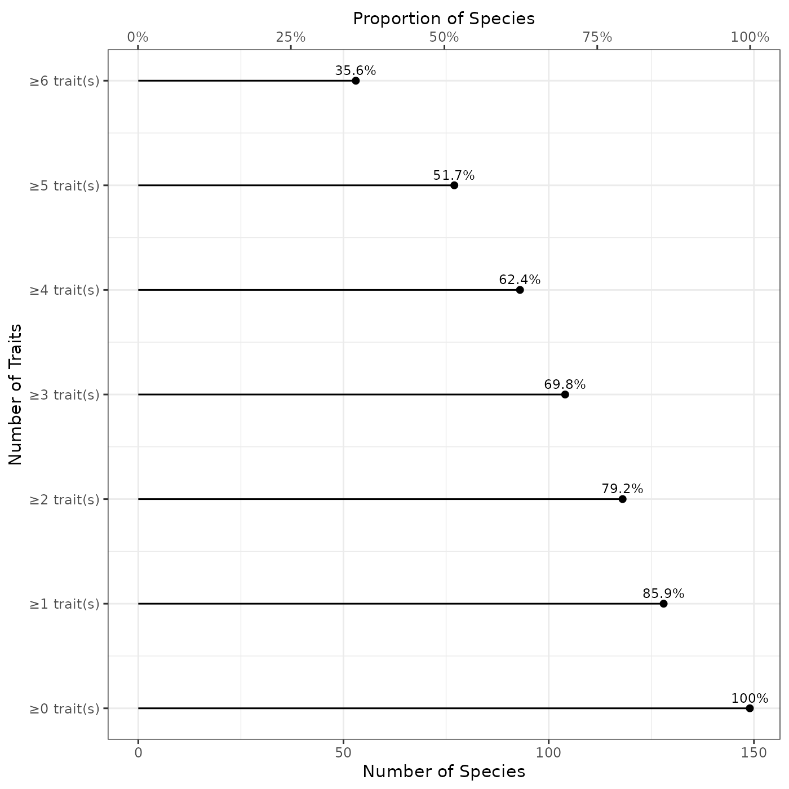
The plot shows the number (bottom x-axis) and the proportion (top x-axis) of species covered by a specific number of traits (0 to 4 in our example). We can read it as the fact that 58.3% of the species show non-missing values for the four traits in the dataset. However, all species (100%) have non-missing values for two or more traits. This doesn’t mean that these two traits are the same, but that all species of datasets have non-missing values for a combination two traits among the four provided traits.
To identify further which combinations of traits are most frequently
available together, we can use the
fb_plot_trait_combination_frequencies() function. This
function takes the species-traits table as first argument:
fb_plot_trait_combination_frequencies(woodiv_traits)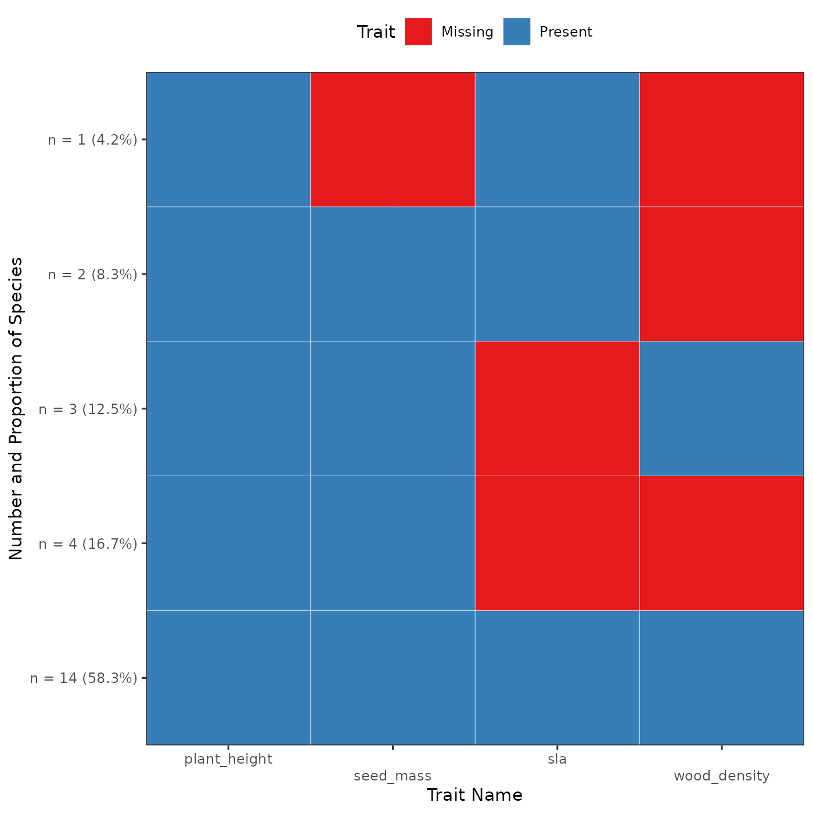
In this plot, each observed combination of missing
and non-missing trait is represented as a row. Each column represents a
different trait. The y-axis details how many species (as well as the
corresponding proportion) harvest this particular combination of
missing/non-missing trait values. The cells are blue to represent
non-missing trait, and red when they are missing. At the bottom of the
graph, we can indeed see that 14 species (representing 58.3% of the
species), have all traits that are non-missing. At the very top we see
that only one species has the a non-missing plant height and SLA with a
missing seed mass and wood density. This graph allows us to better
examine the missingness patterns among our trait dataset. To see all the
available options in funbiogeo as well as the details of
the arguments of each function refer to the diagnostic plots vignette.
Filtering the data
We performed simple visualizations of our dataset to know identify our patterns of trait completeness. Based on these plots, we can choose thresholds in trait completeness to filter our data for our following analyses.
Filter trait by species coverage
We want to select the traits that are available for at least 75% of
the species. To do so we can use the
fb_filter_traits_by_species_coverage() function. The
function takes the species by traits data.frame and outputs
the same dataset but with the traits filtered (so with fewer columns).
The second argument threshold_species_proportion is the
threshold proportion of species covered:
# Initial dimension of the input data
dim(woodiv_traits)
#> [1] 24 5
# Filter traits
selected_traits <- fb_filter_traits_by_species_coverage(
woodiv_traits, threshold_species_proportion = 0.75
)
dim(selected_traits)
#> [1] 24 3
# The reduced data set now has fewer trait columns
head(selected_traits)
#> species plant_height seed_mass
#> 1 AALB 49.64162 67.866923
#> 3 ACEP 25.87500 64.703750
#> 4 ANEB 15.00000 NA
#> 5 APIN 27.33333 55.520000
#> 6 CLIB 35.63636 86.872600
#> 7 CSEM 24.69231 7.608125The function outputs a filtered species-traits dataset retaining only traits covering at least 75% of the species. In the end, this keep only two traits: plant height and seed mass.
Filter species by trait coverage
Now that we obtained a reduced trait dataset, selecting only two
traits, this doesn’t mean that these traits are available for all
species. We could filter species that have only non-missing traits
through the function fb_filter_species_by_trait_coverage()
with the species x traits data.frame as the first argument
and the second argument the proportion of traits that should be known by
species. Here, because we want the species to have all the traits our
threshold will be 100%. This way we can filter our dataset again:
# Filter species which have at least 100% of known traits
selected_species <- fb_filter_species_by_trait_coverage(
selected_traits, threshold_traits_proportion = 1
)
dim(selected_species)
#> [1] 23 3
head(selected_species)
#> species plant_height seed_mass
#> 1 AALB 49.641622 67.866923
#> 3 ACEP 25.875000 64.703750
#> 5 APIN 27.333333 55.520000
#> 6 CLIB 35.636364 86.872600
#> 7 CSEM 24.692308 7.608125
#> 8 JCOM 6.894711 14.556875In the end, by filtering the traits available for at least 75% of the species, have filtering the species that have only non-missing traits for these traits, we ended with a list of 23 species and 2 traits. This is the dataset we’ll continue using in the rest of the vignette.
Filter sites by trait coverage
Now that we have filtered our traits and species of interest, we need
to filter the sites that contain enough species for which the traits are
available. Similarly to above the function is
fb_filter_sites_by_trait_coverage() it takes as first two
arguments the site x species data.frame and the species x
traits data.frame. The third argument is
threshold_traits_proportion that indicates the percent
coverage of traits to filter each site. Note that this coverage is
weighted by the occurrence, abundance, or cover depending on the content
of the site x species data.frame.
Let’s say here we’re interested in sites for which our species with available traits represent at least 90% of the species present:
# Initial site x species data
dim(woodiv_site_species)
#> [1] 5366 25
# Filter sites with at least 90% species covered
filt_sites <- fb_filter_sites_by_trait_coverage(
woodiv_site_species, selected_species, threshold_traits_proportion = 0.9
)
# Filtered sites
dim(filt_sites)
#> [1] 5364 25
filt_sites[1:4, 1:4]
#> site AALB ACEP APIN
#> 1 41152325 1 0 0
#> 2 40852325 1 0 0
#> 3 40852345 1 0 0
#> 4 42552105 1 0 0The output of the function is a site x species
data.frame with selected sites and species. Now we selected
5,364 sites out of 5,366, for our 2 traits and 23 species.
Computing Functional Diversity metrics
The funbiogeo functions helped us filter our data
appropriately with enough available trait information for species and
sites. The goal of funbiogeo is to help you analyzing
functional trait data and computing functional diversity indices. These
indices capture the diversity of trait values in a set of species, if
you’re interested in an introduction to functional diversity indices and
how to analyze them, it’s out of scope of this vignette, but you can
refer to Mammola et al. (2021). The paper
provides a general workflow to work with trait data.
funbiogeo doesn’t aim to substitute to all these amazing
tools that compute a diversity of indices with different properties and
formulas., however, we can use the filtered datasets to proceed with our
analyses This is where you should use your preferred packages to compute
functional diversity indices like mFD or funrar.
If you’re new to the world of functional diversity analyses, we suggest
reading mFD
introductory vignette. It underlines the different steps to compute
functional diversity metrics. If you’re interested in computing
functional rarity indices with funrar you canalso refer to
its
tutorial.
For the sake of the example, we included a function in
funbiogeo to compute Community-Weighted Mean (CWM, Garnier et al. 2004) named
fb_cwm(). The CWM is the abundance-weighted average trait
per site. We’ll be using it in the following section, then we’ll then
show another example computing functional diversity indices using the
mFD package.
Community-Weighted Mean (CWM)
We’re interested to look at the spatial distribution of the average
plant height and seed mass of Conifer tree species. To do so, we can
compute the community-weighted mean of both traits. We’ll use the
fb_cwm() function to do so, it takes the site x species
data.frame and species x traits data.frame as
arguments.
# We're reusing our filtered data, on both the site x species data.frame
# and the species x traits data.frame to compute CWM
cwm <- fb_cwm(filt_sites, selected_species)
head(cwm)
#> site trait cwm
#> 1 26351755 plant_height 12.31767
#> 2 26351765 plant_height 4.88150
#> 3 26351955 plant_height 12.31767
#> 4 26351965 plant_height 13.77575
#> 5 26451755 plant_height 4.88150
#> 6 26451765 plant_height 15.76845It outputs a data.frame with 3 columns: the first one,
site, shows the site name as provided in the input site x
species data.frame, trait which indicates the
trait name on which the CWM is computed, and cwm which
shows the value of the CWM at this site for this trait.
Compute functional diversity indices
We can also integrate our filtered datasets in other functional
diversity computation pipeline. We’ll show an example by computing
functional richness with the mFD package.
Before computing any functional diversity index, we need to scale and
center our trait values so that they are on comparable scales. For this
we can use the tr.cont.scale() function in
mFD. The function requires that species names are available
as row names instead of having a separate species column.
We first give row names and then use the function to scale our
traits.
Note: the following chunk of code is executed only if you have
mFD installed
## To install 'mFD' uncomment the following line
# install.packages("mFD")
# Create a new object
subset_traits <- selected_species
# Add row names
rownames(subset_traits) <- subset_traits[["species"]]
# Remove unused 'species' column
subset_traits <- subset_traits[, -1]
# Scale traits
scaled_traits <- mFD::tr.cont.scale(subset_traits)
# Check that traits are scaled (should have a mean of 0 and SD of 1)
summary(scaled_traits)
#> plant_height seed_mass
#> Min. :-1.4651 Min. :-0.43558
#> 1st Qu.:-0.8662 1st Qu.:-0.37724
#> Median :-0.1174 Median :-0.25557
#> Mean : 0.0000 Mean : 0.00000
#> 3rd Qu.: 0.5587 3rd Qu.:-0.03737
#> Max. : 2.5591 Max. : 4.49587
# Compare initial trait data to scaled traits
head(selected_species)
#> species plant_height seed_mass
#> 1 AALB 49.641622 67.866923
#> 3 ACEP 25.875000 64.703750
#> 5 APIN 27.333333 55.520000
#> 6 CLIB 35.636364 86.872600
#> 7 CSEM 24.692308 7.608125
#> 8 JCOM 6.894711 14.556875
head(scaled_traits)
#> plant_height seed_mass
#> AALB 2.5590553 0.04481508
#> ACEP 0.5778367 0.01959764
#> APIN 0.6994054 -0.05361705
#> CLIB 1.3915576 0.19633213
#> CSEM 0.4792459 -0.43558008
#> JCOM -1.0043865 -0.38018325We get a data.frame with the two scaled traits and species names as row names.
To compute functional diversity indices with mFD we
further need a site by species data.frame, with sites names as row
names, and only for the species for which we have the traits in the
species by trait table. We thus transform the site by species
object:
# Copy filtered sites
formatted_site_species <- filt_sites
# Put site names as row names
rownames(formatted_site_species) <- filt_sites[["site"]]
formatted_site_species <- formatted_site_species[, -1]
# Keeping only species for which we have the traits
formatted_site_species <- formatted_site_species[, rownames(scaled_traits)]
formatted_site_species[1:5, 1:5]
#> AALB ACEP APIN CLIB CSEM
#> 41152325 1 0 0 0 0
#> 40852325 1 0 0 0 0
#> 40852345 1 0 0 0 0
#> 42552105 1 0 0 0 0
#> 41152315 1 0 0 0 0mFD furthermore requires that the site by species object
is a matrix, we thus convert it to a matrix:
formatted_site_species <- as.matrix(formatted_site_species)We can now compute functional diversity metrics using the
alpha.fd.multidim() function from the mFD
package. We’ll be using our two formatted objects
scaled_traits as our species by trait table, and
formatted_site_species as our site by species table. We’ll
be computing Functional Dispersion (noted FDis) as a functional
diversity index. It’s out of the scope of this vignette to explain the
differences between functional diversity indices, but we recommend
reading Mammola et al. (2021) for a
general introduction about them.
Going back to computing Functional Dispersion with the
alpha.fd.multidim() function, we need to use the
species-traits table as first argument then the site-species table as
second argument, then the name of the functional diversity index as a
third argument:
woodiv_fdis <- mFD::alpha.fd.multidim(
scaled_traits, formatted_site_species, ind_vect = "fdis",
# remove all of the messages
details_returned = FALSE, verbose = FALSE
)
head(woodiv_fdis$functional_diversity_indices)
#> sp_richn fdis fide_plant_height fide_seed_mass
#> 41152325 7 0.3847528 -0.14087355 -0.1624503
#> 40852325 8 0.4080783 0.09301692 -0.1733643
#> 40852345 8 0.4213861 0.04003436 -0.2076613
#> 42552105 6 0.4368759 0.26890829 -0.1355701
#> 41152315 9 0.3917271 0.01446366 -0.1938831
#> 37452365 2 0.6982520 0.77733440 -0.1676841We now have a table with several diversity indices computed for each site. This table contains site names as row names an four columns:
-
sp_richn, which is the species richness, -
fdis, the Functional Dispersion index, -
fide_plant_height, the average plant height of all species of the site, -
fide_seed_mass, the average seed mass of all species of the site.
Now, we can use funbiogeo again to put these different
indices on a map to better understand our dataset. Mapping functions are
the topic of the next section of this introductory vignette.
Putting variables on the map
Mapping diversity indices
As we’re interested in putting functional dispersion on a map, we
should slightly transform our site-indices table to include an explicit
site column as required by funbiogeo:
# Simplify object
woodiv_fdis <- woodiv_fdis$functional_diversity_indices
# Create 'site' column
woodiv_fdis[["site"]] <- rownames(woodiv_fdis)
# Remove row names
rownames(woodiv_fdis) <- NULL
# Move 'site' column as first column
woodiv_fdis <- woodiv_fdis[, c(5, 1:4)]
head(woodiv_fdis)
#> site sp_richn fdis fide_plant_height fide_seed_mass
#> 1 41152325 7 0.3847528 -0.14087355 -0.1624503
#> 2 40852325 8 0.4080783 0.09301692 -0.1733643
#> 3 40852345 8 0.4213861 0.04003436 -0.2076613
#> 4 42552105 6 0.4368759 0.26890829 -0.1355701
#> 5 41152315 9 0.3917271 0.01446366 -0.1938831
#> 6 37452365 2 0.6982520 0.77733440 -0.1676841We get a regular data.frame describing each diversity index with the
site column giving the id of the sites. Using
funbiogeo we can automatically create a map of these
variables by using the fb_map_site_data() function. It
takes as first three arguments: (1) the site locations sf
object, (2) the data.frame containing the data to be plotted with a
column named site, (3) the name of the column to be plotted
on the map as a character string (= quoted). Let’s represent the
functional dispersion:
fb_map_site_data(woodiv_locations, woodiv_fdis, "fdis")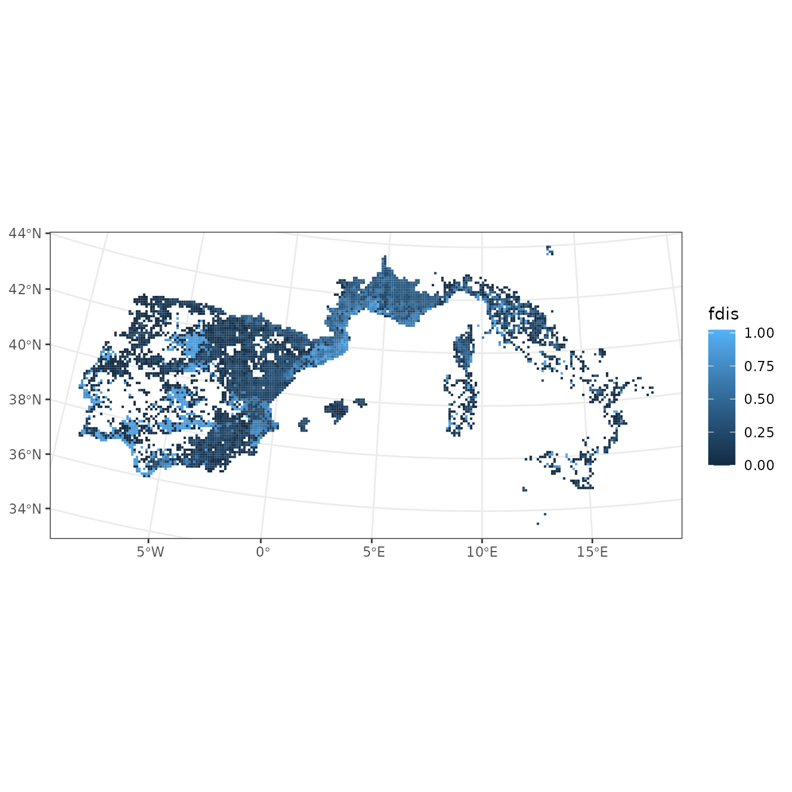
We get a map of our sites, colored by Functional Dispersion. The map uses the defaultggplot2 color scheme. We see that we have
higher functional dispersion in Spain and in the French-Spanish border
than in Italy. Because all of the plotting functions of
funbiogeo output ggplot2 objects they can be
customized using usual ggplot2 syntax:
fb_map_site_data(woodiv_locations, woodiv_fdis, "fdis") +
scale_fill_viridis_c() +
labs(fill = "Functional Dispersion",
title = "WOODIV (2 traits: plant height & seed mass)") +
theme(legend.position = "bottom")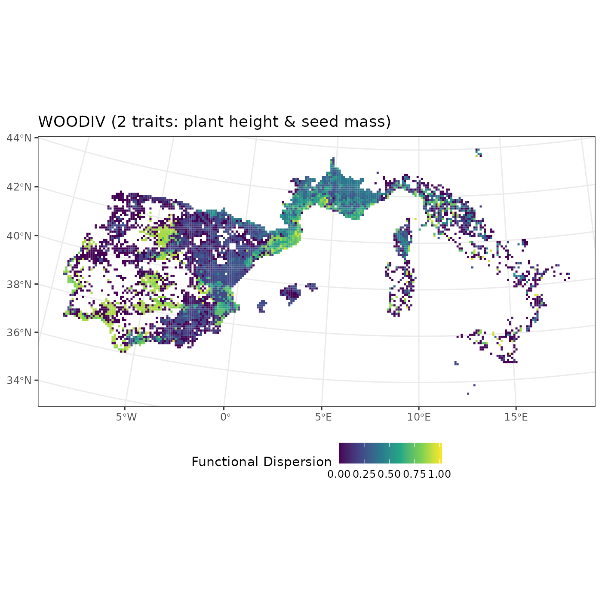
We can proceed similarly to display the average plant height per
assemblage by specifying the name of the column
fide_plant_height from our woodiv_fdis
data.frame:
fb_map_site_data(woodiv_locations, woodiv_fdis, "fide_plant_height") +
# Additional code to customize our plot
scale_fill_distiller("Average plant height", palette = "RdYlBu") +
labs(title = "WOODIV average plant height") +
theme(legend.position = "bottom")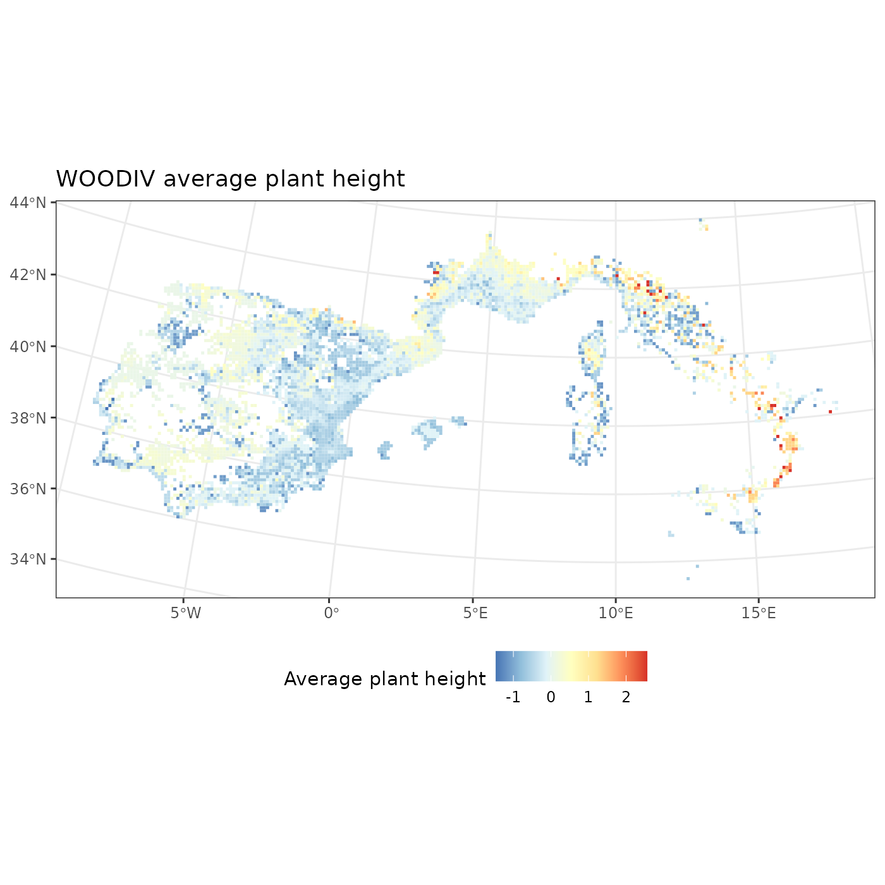
We see that the tallest assemblages are in Italy, while central Spain and North of Portugal shows the lowest average plant height. You can adapt the above code on the other available diversity indices.
Mapping an environmental raster
A common case of analysis in biogeography is to be interested in
mapping environmental variables. If we want to display the environment
associated with our sites of interest, we can leverage environmental
raster layers as provided, for example, by WorldClim (Fick and Hijmans 2017) or CHELSA (Karger et al. 2017). Fortunately, we have
access to an example raster of mean annual temperature through
funbiogeo.
We ar first going to read the raster using the terra
package, which is the reference package to read spatial raster data. If
you want to know more about raster data, we recommend reading the dedicated chapter in the Geocomputations with R book
(Lovelace, Nowosad, and Muenchow 2025).
Then, we’ll use the fb_map_raster() function that displays
a map for the first layer of the raster data. It takes the actual raster
object as first argument. The other arguments are passed to the
theme() function of ggplot2 to customize the plot.
So first, let’s read the mean annual temperature raster provided by
funbiogeo. For this, we’ll use the
system.file() function which allows accessing specific
files from packages, then we’ll read the raster with the
rast() function from the terra package:
# Get file pathr
tavg <- system.file(
"extdata", "annual_mean_temp.tif", package = "funbiogeo"
)
# Read raster
tavg <- terra::rast(tavg)
# Display object
tavg
#> class : SpatRaster
#> size : 290, 405, 1 (nrow, ncol, nlyr)
#> resolution : 0.08333333, 0.08333333 (x, y)
#> extent : -10.5, 23.25, 35.83333, 60 (xmin, xmax, ymin, ymax)
#> coord. ref. : lon/lat WGS 84 (EPSG:4326)
#> source : annual_mean_temp.tif
#> name : annual_mean_temp
#> min value : -5.921834
#> max value : 19.843750This raster represents mean annual temperature in Europe. We can see that the temperature goes between -5.9°C and 19.8°C. The raster isn’t projected (as given by its EPSG code).
We then display it with the fb_map_raster() function
from funbiogeo in the next chunk.
# Map raster
fb_map_raster(tavg)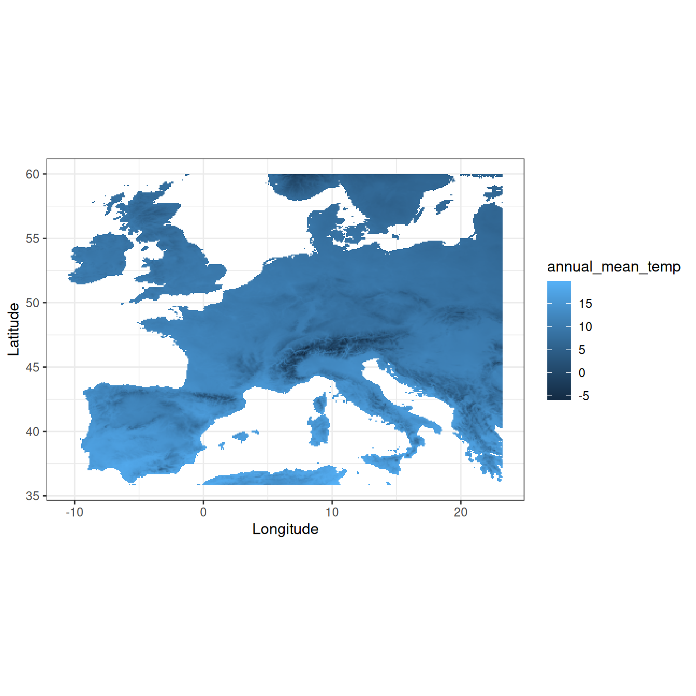
As with all plots provided by funbiogeo, the
fb_map_raster() returns a ggplot2 object which can be
customized providing additional functions:
# Map raster
fb_map_raster(tavg) +
scale_fill_distiller("Temperature", palette = "Spectral") +
labs(title = "Mean annual temperature in Europe") +
theme(legend.position = "bottom")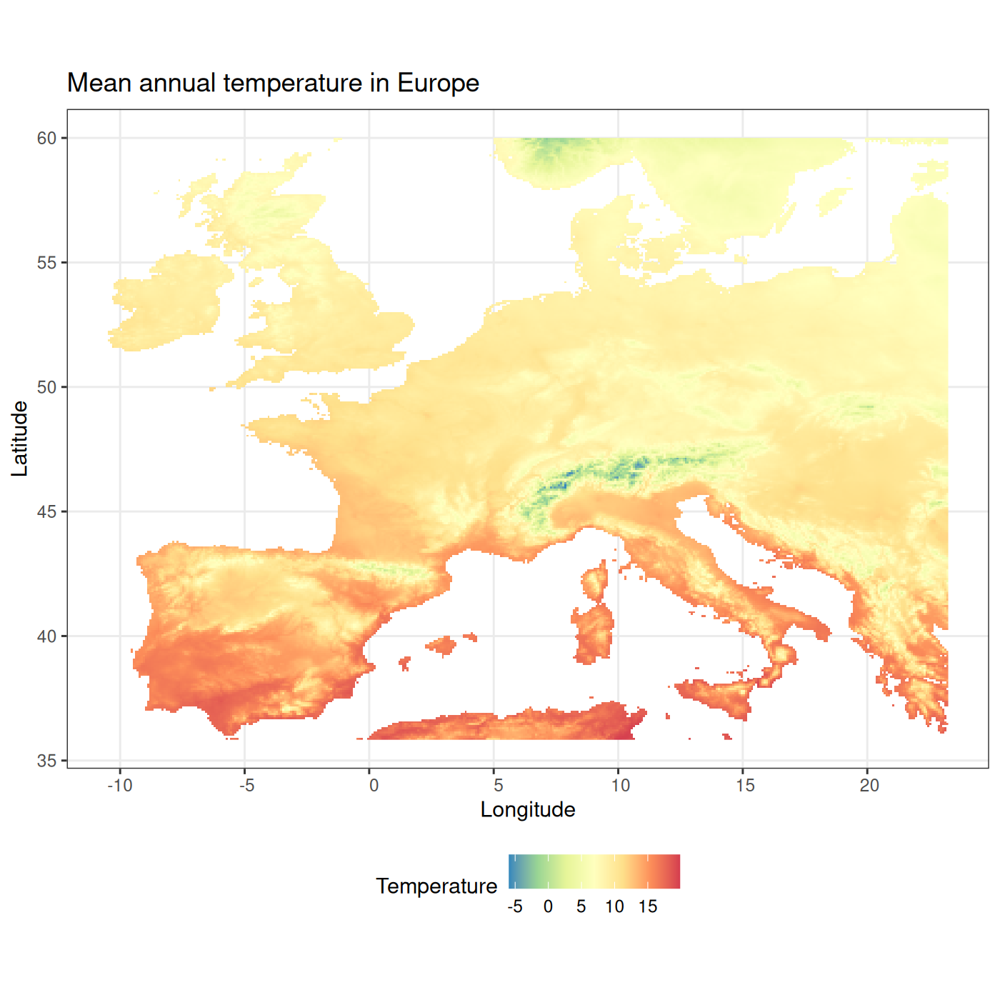
To learn about the ggplot2 syntax and functions check the ggplot2
introductory vignette.
Leveraging the patchwork package, that allows to combine
different ggplot2 objects, we can have side-by-side, the
map of mean annual temperature and the one on annual total
precipitation:
library("patchwork")
# Read rasters
tavg <- system.file("extdata", "annual_mean_temp.tif", package = "funbiogeo")
tavg <- terra::rast(tavg)
prec <- system.file("extdata", "annual_tot_prec.tif", package = "funbiogeo")
prec <- terra::rast(prec)
# Individual Maps
map_temperature <- fb_map_raster(tavg, legend.position = "none") +
scale_fill_distiller("Temperature", palette = "Spectral")
map_precipitation <- fb_map_raster(prec) +
scale_fill_distiller("Precipitation", direction = 1)
# Compose plot (leveraging `patchwork`)
(map_temperature / map_precipitation) +
plot_annotation(title = "Europe",
theme = theme(plot.title = element_text(face = "bold"))) &
theme_classic() &
theme(text = element_text(family = "mono"))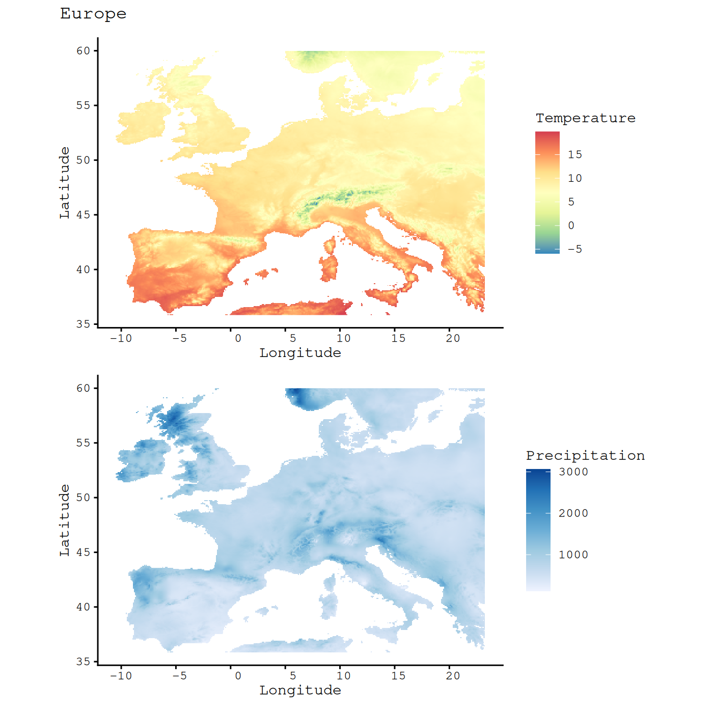
This function allows the visualization of a raster in a simple fashion, but it doesn’t tell us anything about the environmental variable at the sites we’re interested in. In the next section we will map an environmental variable at each site of our study.
Map of average environmental variable in site
We want to make a map of the average environmental conditions of the
sites. For this we’re using the above-mentioned terra
raster of the mean annual temperature, named tavg. To
automatically extract the average mean annual temperature per site, we
use the fb_get_environment() function, it takes as first
argumen the site-locations object and a second argument the
environmental raster. It takes the average of the raster values per
site.
site_env <- fb_get_environment(woodiv_locations, tavg)
head(site_env)
#> site annual_mean_temp
#> 1 26351755 NaN
#> 2 26351765 16.44746
#> 3 26351955 16.08605
#> 4 26351965 NaN
#> 5 26451755 16.66498
#> 6 26451765 16.39656The variable names in the columns are based on the names of the
provided raster. Here, because the raster has a single layer named
annual_mean_temp, it’s the name of the column. Note that
the fb_get_environment() function also works with
multi-layered rasters to extract multiple average conditions at observed
sites.
To put these values on the map we can use the
fb_map_site_data() function, which allows mapping arbitrary
site-level variables. It takes three needed arguments: the first of
which, site_locations, which is the sf object
describing sites’ geographic locations; the second argument is
site_data, which is a data.frame giving
additional data indexed by site; and selected_col, which is
a character giving the name of the column to plot from the
site_data argument.
We can thus plot the mean annual temperature of sites through the following commands:
fb_map_site_data(woodiv_locations, site_env, "annual_mean_temp") +
labs(title = "Mean Annual Temperature per Site")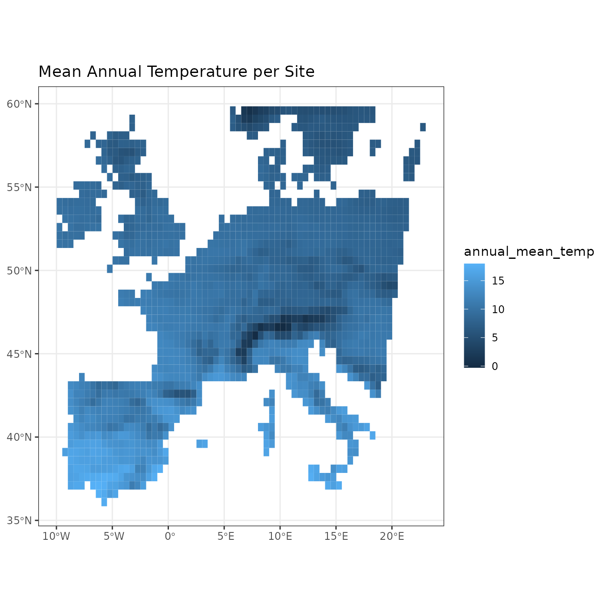
Conclusion
This concludes our tutorial to introduce funbiogeo. The
package contains many more features, especially several diagnostic plots
that allow to identify which trait are missing or not, at species or
site scales. All of the plots are explained in details in a dedicated vignette. There is also a
specific vignette about transforming raw data
from long to wide format. Finally, if you’re interested in learning
about up-scaling your sites, which means aggregating your sites at
coarser scales,you can refer to the specific
vignette.